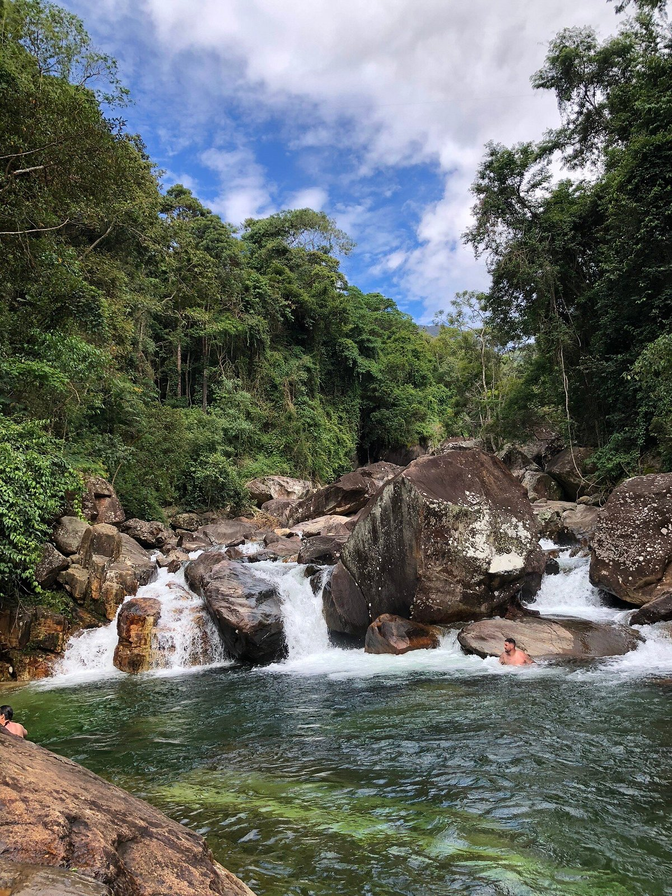
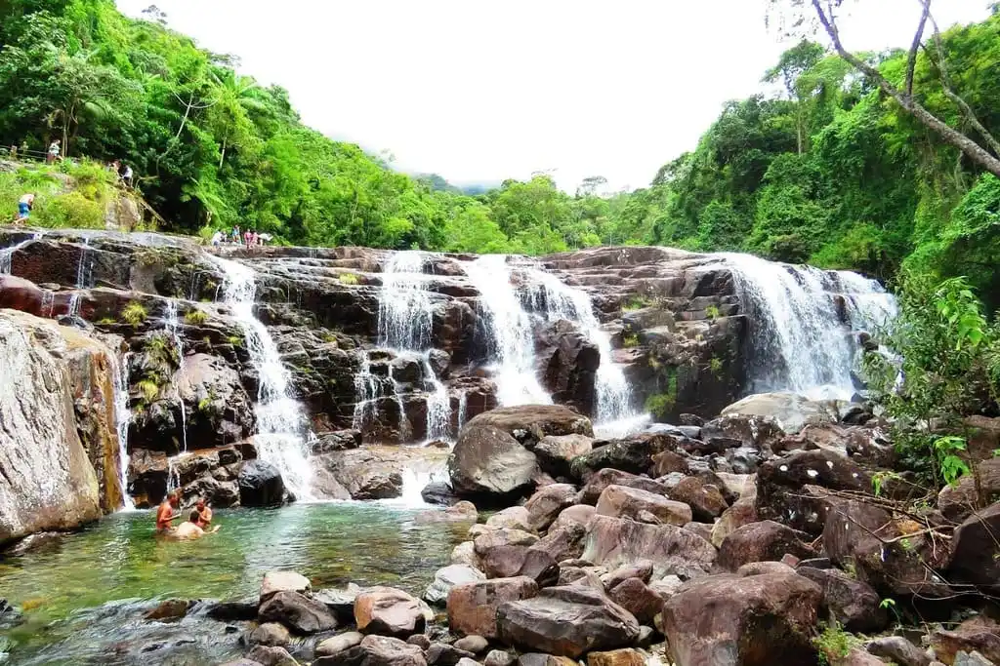

Rio Claro - Iúna - ES
A cidade das cachoeiras.
Rio Claro distrito de Iúna, na divisa do estado de Minas Gerais com o estado do Espírito Santo, localizada dentro da reserva do Parque Nacional do Caparaó abriga as cachoeiras mais bonitas do Brasil.
Dentre esses locais, podemos destacar:
Poço das Antas

Chega a ser dificil elencar qual das cachoeiras e poços é considerado o melhor, todos aqui publicados estarão em pé de igualdade. Logo, o Poço das Antas por exemplo, é um poço de aguas cristalinas esvedeadas, ótimo para recarregar as energias.
Poço do Egito

Também um corpo d'água incrível, com aguas cristalinas, e toda uma estrutura pra receber os visitantes, desde passarelas de madeira pra chegar mais facilmente ao poço bem como estrutura de bar e musica ao vivo aos finais de semana pra quem curte mais essa pegada.
Cachoeira do Rogério

Outra opção que temos é a cachoeira do Rogério, "apenas mais um" corpo d'água de águas cristalinas.
Por fim, o foco da região são os poços e cachoeiras, havendo uma diversidade de campings na região, desde algo mais raiz, camping com barracas, à camping com chalés ou pousadas. Recomendamos fortemente a visita nos meses de verão, uma vez que a nascente dessas águas se dá em altitude elevada e como são proximas, sao corpos d'água bastante frios, logo, melhores de serem visitados no verão.